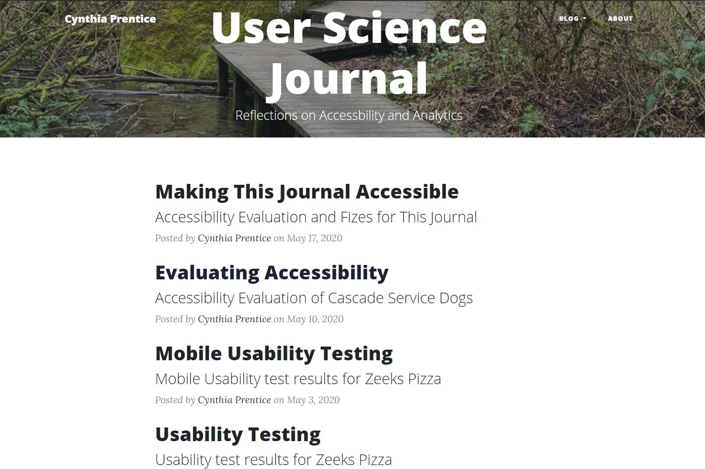
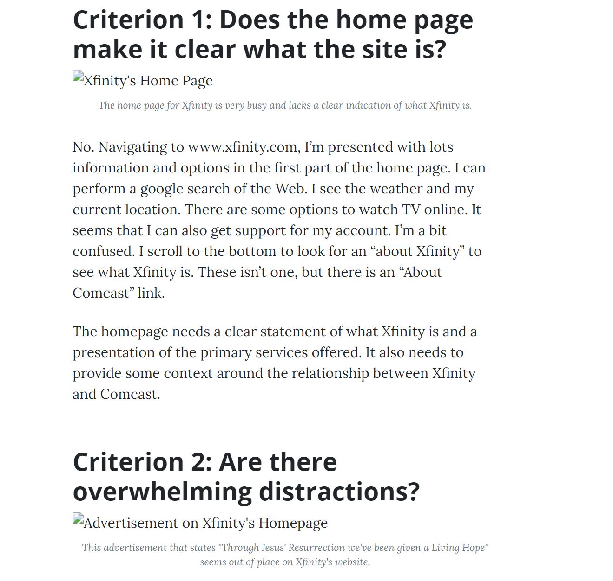
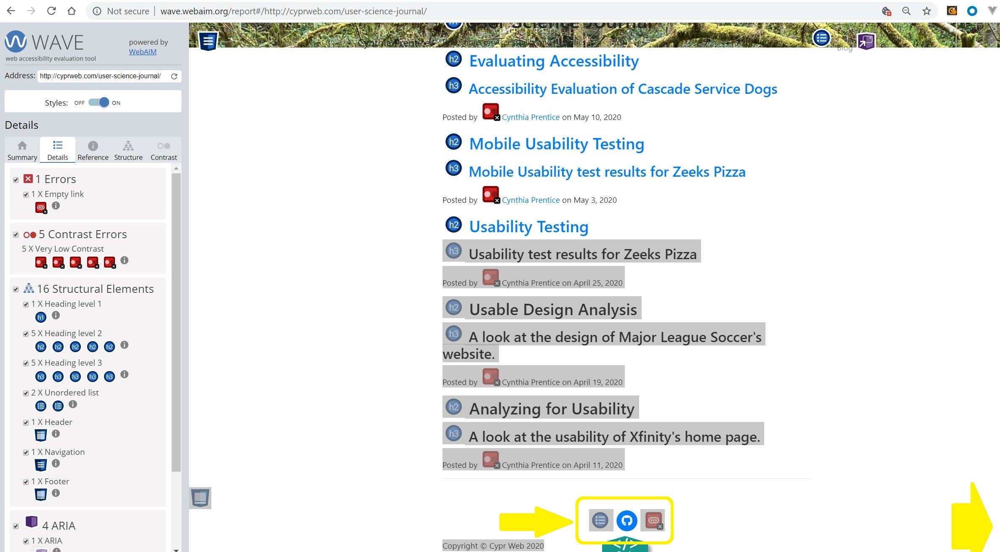
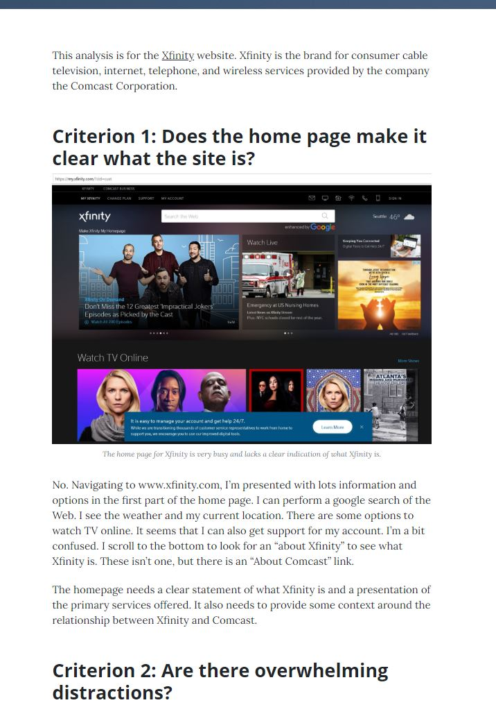
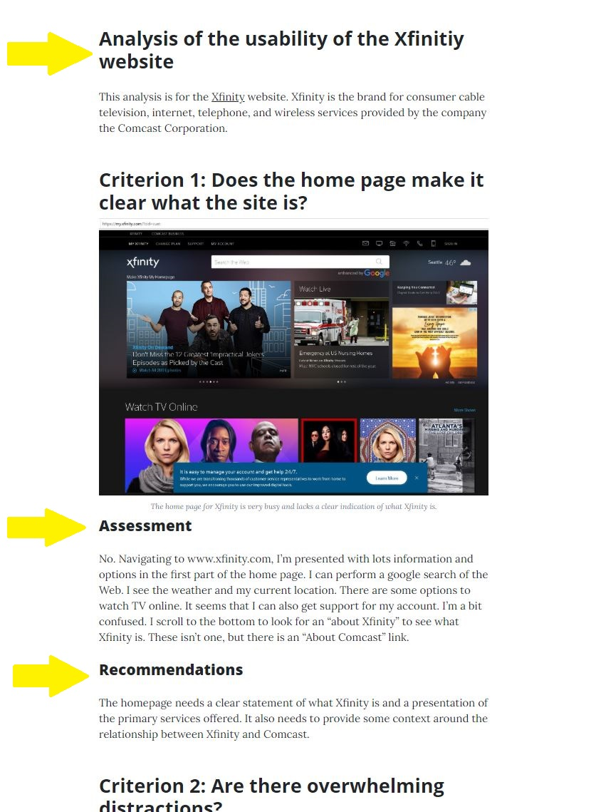
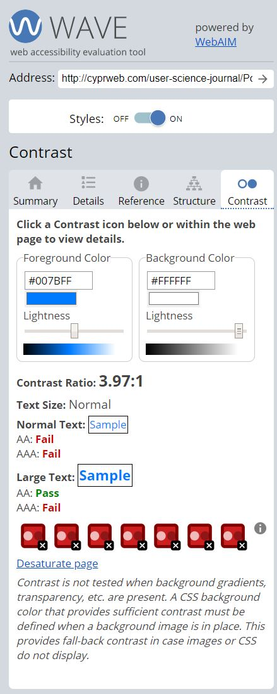

Accessiblity Evaluation and Fixes for this User Science Journal
This website is a journal of tests and assessments for the User Science and Testing course at Seattle University. This week it's time to apply some of this quarter's learning and make the journal itself accessible.
 The Home Page for this User Science Journal lists all the posts in the journal.Accessibility Assessment Overview
Assessment Scope
I conducted an accessibility review of 3 of the pages of this User Science Journal:
Assessment Approach
I performed 4 checks of each page:
- Error check with the Web Accessibility Evaluation Tool (WAVE)
- Review of image alt tags
- Keyboard navigation of all links
- Review of the header tags to see if they provided a useful outline of the content
Accessiblity Successes
 When removing the images from this User Science Journal post, the alt text and captions summarize the key points so the reader can follow the analysis in the post.- The pages used both alt tags and image captions to describe the images. Users who cannot see the images can receive the key information conveyed by the image by reading this text or having it read to them with a screen reader.
- All links were accessible via keyboard navigation. Users who cannot navigate with a mouse or touch pad can still access all links to navigate through the site.
Accessibility Fixes
Fix 1: Removed empty h2 header
<div class="site-heading">
<h1>Analyze for Usability</h1>
<h2 class="subheading"> </h2>
The WAVE tool identified an h2 tag on all of my posts that didn't have any content. This tag was part of the Bootstrap Clean Blog template used to build this site. I chose not to use that tag to put subheaders on my posts, but had left the empty tag. While invisible to those looking at the webpage, this could be confusing for a screen reader, so I removed these empty placeholder tags.
Fix 2: Added missing Aria label
 The WAVE error for "1 X Empty Link" identified an icon link to my github account that did not have a corresponding text label.
<a href="https://github.com/cynprentice" target="_blank"
aria-label="Github"></a>
With the aria label of Github, users who cannot see the icon will know that the link goes to a github page.
Fix 3: Improved page outline using headers
 This post analyzing the usability of the xFinity website was missing a header at the beginning of the content and subheaders with in each evaluation criterion.  This updated post has an additional headers to improve the organization and readability of the post.I added an H2 header at the beginning of the content to introduce the post. I also added h3 headers under each evaluation criterion to identify sections for my assessment and my recommendations. This will help all users follow the text and will provide a more granular outline for screen readers.
Challenges Fixing Accessibility Issues
Low Color Contrast of Links
 The WAVE tool identifying low color contrast issues with the links through the User Science Journal. They had an insufficient contrast ratio of 3.97:1.I added new css to use darker colors for links in all the different states (active, focus, hover, visited). It was challenging to find all the custom colors applied by the Clean Blog template, so I could overide them.
On the screen I see these colors and the improved color contrast reflected. However, the WAVE tool still alerts me of low color contrast on my links due to a light blue color that I can't find.
a,
p a {
text-decoration: underline;
color: #212529;
}
.post-preview>a,
.post-preview>.post-meta>a {
text-decoration: none;
color: #212529;
}
a:link,
p a.link,
.post-preview>a:link,
.post-preview>.post-meta>a:link {
color: #212529;
}
a:visited,
p a:visited,
.post-preview>a:visited,
.post-preview>.post-meta>a:visited {
color: #463961;
}
a:hover,
a:focus,
a:active,
p a:hover,
p a:focus,
p a:active,
.post-preview>a:hover,
.post-preview>a:focus,
.post-preview>a:active,
.post-preview>.post-meta>a:hover,
.post-preview>.post-meta>a:focus,
.post-preview>.post-meta>a:active {
text-decoration: underline;
color: darkblue;
}
- The h4 headers that are links to other pages should be links or buttons instead of headers. This section could also benefit from an h2 header since this is not subcontent for the "Our Mission" section.
- Rewriting the second h2 tag to "About Cascade Service Dogs" would elimitate duplicating the h1 tag for the page and provide more detail as to the content of that section.
- The donations section is not a subsection of any other part of the page, so it should also have an h2 rather than h4 tag.
Is the Bootstrap Framework overall helpful or harmful to the goal of creating accessible web pages?
I was suprised by how much of my accessibility successes and failures could be attributed to the Bootstrap framework, or more specifically the Clean Blog bootstrap template I chose to use for this journal.
This speaks to the power and responsibility of templates to support accessible design. If the default colors (especially those hard to change link colors) have the correct color contrast, blogs leveraging the site will inherit accessible colors. Because the sample post had placeholder HTML for alt tags and image captions, I was reminded to fill in this information when copying and updating the post template. Aria labels for the navigation was built in, so I didn't have to add these.
I've concluded that one of the best ways to make an accessible site is to start with an accessible template.